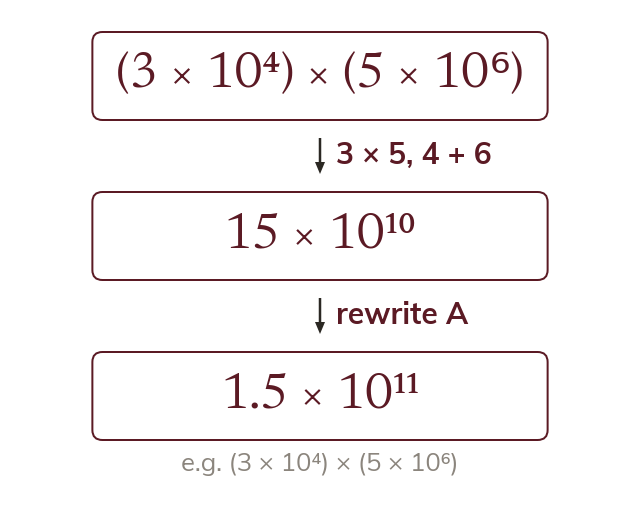

Multiply the parts separately
A product can be taken in any order. So the A values multiply and the powers of 10 add.
The factors of a product can be taken in any order. So the A values are multiplied together, and the powers of 10 are multiplied by adding their indices.